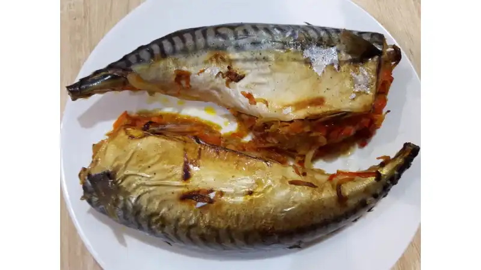
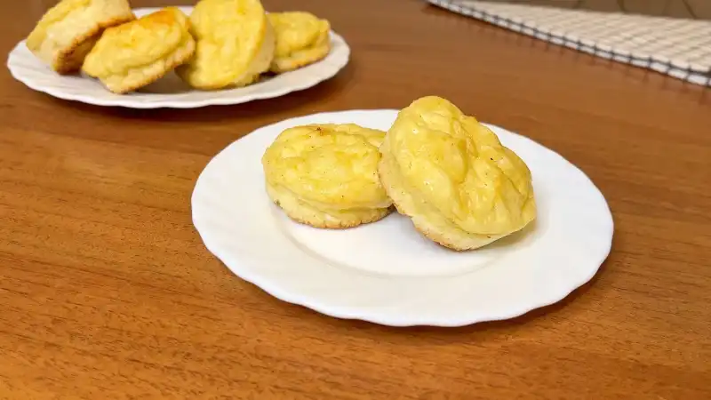
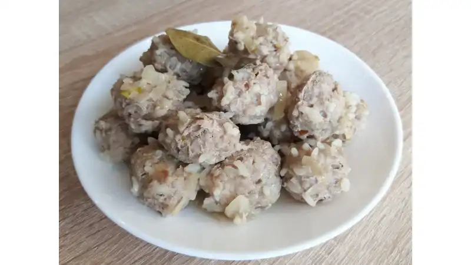

Закусочный Блинный Торт с Грибами и Сыром
Вторые блюда | Диетические и постные блюда
288 просмотров
28
Полезная Вкусная Скумбрия Запечённая с Овощами
Вторые блюда | Диетические и постные блюда
100 просмотров
12
Быстрый и Полезный Салат из Печени Трески. Закуска из Печени Трески

Диетические и постные блюда | Салаты
1291 просмотров
20
Салат Королевский с Крабовыми Палочками Вкусный и Быстрый

Диетические и постные блюда | Салаты
1329 просмотров
20
Фаршированные Цукини (Кабачки) в Духовке
Вторые блюда | Диетические и постные блюда
63 просмотров
9
Салат с Креветками без Майонеза Вкусный и Лёгкий. Простой рецепт Салата с Креветками.

Диетические и постные блюда | Салаты
1236 просмотров
16
Кабачки в Духовке Вкусно и Быстро

Первые блюда | Вторые блюда | Диетические и постные блюда
148 просмотров
9
Быстрый Салат с Помидорами и Тунцом без Майонеза

Диетические и постные блюда | Салаты
756 просмотров
12
Сырники в духовке без муки
Завтраки | Диетические и постные блюда
13 просмотров
3
Персиковый Торт (Постный/Веганский)
Диетические и постные блюда | Десерты и выпечка
70 просмотров
4
Гармония вкуса это вкусно быстро просто вкусный рецепт который быстро готовится вторые блюда к столу
Ленивые Вареники с Творогом. Вкусный и Полезный Завтрак

Завтраки | Диетические и постные блюда
96 просмотров
3
Лепёшки с Луком

Первые блюда | Вторые блюда | Диетические и постные блюда
111 просмотров
3
Диетические Тефтели с Рисом Вкусные и Полезные. Тефтели с Рисом из Телятины
Вторые блюда | Диетические и постные блюда
34 просмотров
2
Брокколи в Духовке. Запеканка из Брокколи Просто и Вкусно
Вторые блюда | Диетические и постные блюда
38 просмотров
2
Сырая Икра из Баклажанов Очень Вкусная Холодная Закуска. Закуска из Баклажанов Простой Рецепт

Вторые блюда | Диетические и постные блюда
42 просмотров
1
Постный Шоколадный Пирог. Вкусный Постный Пирог за 20 минут
Диетические и постные блюда | Десерты и выпечка
44 просмотров
1
Лепёшки с Зеленью на Сковороде без Дрожжей

Завтраки | Первые блюда | Диетические и постные блюда
82 просмотров
1